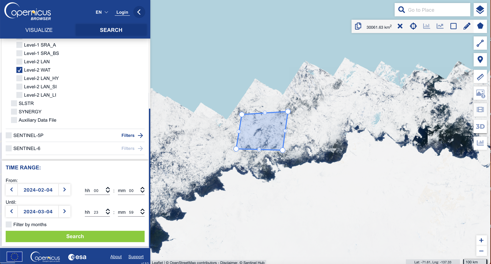

Interpolation of Sea Level Anomaly using GPSat#
Week 8 contents can be accessed here.
Fetching data#
In week 4, we’ve introduced the method to fetch different types of data from the Google Earth Engine and Copernicus Dataspace. The data we are going to use in this week’s content is teh altimetry data. Therefore, we will use Copernicus Dataspace API instead of Google Earth Engine. Let’s fetch this data and recall some of the procedures.
!pip install cartopy
!pip install netCDF4
import requests
import pandas as pd
import subprocess
import os
import time
import shutil
import json
from datetime import date
from joblib import Parallel, delayed
import zipfile
import sys
import glob
import numpy as np
def get_access_token(username, password):
"""
Obtain an access token to the Copernicus Data Space Ecosystem.
Necessary for the download of hosted products.
"""
p = subprocess.run(f"curl --location --request POST 'https://identity.dataspace.copernicus.eu/auth/realms/CDSE/protocol/openid-connect/token' \
--header 'Content-Type: application/x-www-form-urlencoded' \
--data-urlencode 'grant_type=password' \
--data-urlencode 'username={username}' \
--data-urlencode 'password={password}' \
--data-urlencode 'client_id=cdse-public'", shell=True,capture_output=True, text=True)
access_dict = json.loads(p.stdout)
return access_dict['access_token'], access_dict['refresh_token']
#=============================================================================================================================================================#
def get_new_access_token(refresh_token):
"""
Obtain a new access token to the Copernicus Data Space Ecosystem using a previously provided refesh token.
"""
p = subprocess.run(f"curl --location --request POST 'https://identity.dataspace.copernicus.eu/auth/realms/CDSE/protocol/openid-connect/token' \
--header 'Content-Type: application/x-www-form-urlencoded' \
--data-urlencode 'grant_type=refresh_token' \
--data-urlencode 'refresh_token={refresh_token}' \
--data-urlencode 'client_id=cdse-public'", shell=True,capture_output=True, text=True)
access_dict = json.loads(p.stdout)
return access_dict['access_token'], access_dict['refresh_token']
#=============================================================================================================================================================#
def get_S3_products_by_names(names):
"""
Obtain a pandas dataframe of Sentinel products for a given list of product names.
"""
all_results = []
base_url = "https://catalogue.dataspace.copernicus.eu/odata/v1/Products?$filter="
for name in names:
query_url = f"{base_url}Name eq '{name}'&$top=1000"
response = requests.get(query_url)
json_response = response.json()
if 'value' in json_response:
all_results.extend(json_response['value'])
results_df = pd.DataFrame.from_dict(all_results)
if not results_df.empty:
results_df['Satellite'] = [row['Name'][:3] for i, row in results_df.iterrows()]
results_df['SensingStart'] = [pd.to_datetime(row['ContentDate']['Start']) for i, row in results_df.iterrows()]
results_df['SensingEnd'] = [pd.to_datetime(row['ContentDate']['End']) for i, row in results_df.iterrows()]
results_df = results_df.sort_values(by='SensingStart')
return results_df
def download_single_product(product_id, file_name, access_token, download_dir="downloaded_products"):
"""
Download a single product from the Copernicus Data Space.
:param product_id: The unique identifier for the product.
:param file_name: The name of the file to be downloaded.
:param access_token: The access token for authorization.
:param download_dir: The directory where the product will be saved.
"""
# Ensure the download directory exists
os.makedirs(download_dir, exist_ok=True)
# Construct the download URL
url = f"https://zipper.dataspace.copernicus.eu/odata/v1/Products({product_id})/$value"
# Set up the session and headers
headers = {"Authorization": f"Bearer {access_token}"}
session = requests.Session()
session.headers.update(headers)
# Perform the request
response = session.get(url, headers=headers, stream=True)
# Check if the request was successful
if response.status_code == 200:
# Define the path for the output file
output_file_path = os.path.join(download_dir, file_name + ".zip")
# Stream the content to a file
with open(output_file_path, "wb") as file:
for chunk in response.iter_content(chunk_size=8192):
if chunk:
file.write(chunk)
print(f"Downloaded: {output_file_path}")
else:
print(f"Failed to download product {product_id}. Status Code: {response.status_code}")
cop_dspace_usrnm = '220211080002@hhu.edu.cn' # amend with your copernicus dataspace username
cop_dspace_psswrd = 'Dzq223496!:!:'# amend with your copernicus dataspace password
token, refresh_token = get_access_token(cop_dspace_usrnm, cop_dspace_psswrd)
product_names = [
"S3A_SR_2_WAT____20230101T185252_20230101T185651_20230101T203101_0239_094_027______MAR_O_NR_005.SEN3",
"S3A_SR_2_WAT____20230101T121709_20230101T122349_20230101T135934_0400_094_023______MAR_O_NR_005.SEN3",
"S3A_SR_2_WAT____20230102T182657_20230102T183045_20230102T200425_0228_094_041______MAR_O_NR_005.SEN3",
"S3A_SR_2_WAT____20230102T115112_20230102T115751_20230102T132929_0399_094_037______MAR_O_NR_005.SEN3",
"S3A_SR_2_WAT____20230105T121326_20230105T122007_20230105T134843_0401_094_080______MAR_O_NR_005.SEN3",
"S3A_SR_2_WAT____20230105T184910_20230105T185308_20230105T202752_0238_094_084______MAR_O_NR_005.SEN3",
"S3A_SR_2_WAT____20230106T182316_20230106T182702_20230106T200253_0226_094_098______MAR_O_NR_005.SEN3",
"S3A_SR_2_WAT____20230109T120945_20230109T121625_20230109T135020_0400_094_137______MAR_O_NR_005.SEN3",
"S3B_SR_2_WAT____20230103T122643_20230103T123314_20230103T140329_0391_074_294______MAR_O_NR_005.SEN3",
"S3B_SR_2_WAT____20230104T183621_20230104T184014_20230104T201141_0233_074_312______MAR_O_NR_005.SEN3",
"S3B_SR_2_WAT____20230107T122257_20230107T122931_20230107T135514_0394_074_351______MAR_O_NR_005.SEN3",
"S3B_SR_2_WAT____20230107T185833_20230107T190234_20230107T203555_0240_074_355______MAR_O_NR_005.SEN3",
"S3B_SR_2_WAT____20230108T183238_20230108T183630_20230108T200807_0232_074_369______MAR_O_NR_005.SEN3",
"S3B_SR_2_WAT____20230108T115654_20230108T120333_20230108T133905_0399_074_365______MAR_O_NR_005.SEN3",
"S3B_SR_2_WAT____20230111T185450_20230111T185850_20230111T202939_0240_075_027______MAR_O_NR_005.SEN3",
"S3B_SR_2_WAT____20230111T121911_20230111T122547_20230111T135219_0396_075_023______MAR_O_NR_005.SEN3"
]
results_df = get_S3_products_by_names(product_names)
print(results_df)
@odata.mediaContentType Id \
1 application/octet-stream df44f31a-61d2-5964-838b-816a54e39e43
0 application/octet-stream ccd45b65-52f8-5761-a43a-5909c6b05cc4
3 application/octet-stream eef92190-f150-5f99-b61d-6fe53bac377a
2 application/octet-stream 30e00559-06fb-57f4-9960-544f0f036439
8 application/octet-stream 68339973-c768-5475-a93f-20b271d53880
9 application/octet-stream e7247cfb-ad7c-59ed-80cb-a86f7ca8a5f7
4 application/octet-stream f9d13b5d-3ad2-5723-bd0e-2a9f3a685797
5 application/octet-stream 596577bf-a7eb-5ad3-974a-45e7819244c9
6 application/octet-stream e7c0673a-7102-5025-ac1b-d989957274e0
10 application/octet-stream d4cc75e3-d55e-5a77-bb26-35efe4f6f918
11 application/octet-stream fc0101b5-a4a1-5a1c-9221-ef07a816ed1c
13 application/octet-stream 45b2e256-9995-5ac3-8070-bfcd00e8e026
12 application/octet-stream 65b1891a-60ca-5241-b5a8-96aa428b8838
7 application/octet-stream 46ba2140-f18a-52b3-b3e9-c1f913736c2f
15 application/octet-stream 985457af-568b-51a9-b457-c97c85e57e70
14 application/octet-stream 09864a89-0698-5ccb-a88d-4e63737db88c
Name \
1 S3A_SR_2_WAT____20230101T121709_20230101T12234...
0 S3A_SR_2_WAT____20230101T185252_20230101T18565...
3 S3A_SR_2_WAT____20230102T115112_20230102T11575...
2 S3A_SR_2_WAT____20230102T182657_20230102T18304...
8 S3B_SR_2_WAT____20230103T122643_20230103T12331...
9 S3B_SR_2_WAT____20230104T183621_20230104T18401...
4 S3A_SR_2_WAT____20230105T121326_20230105T12200...
5 S3A_SR_2_WAT____20230105T184910_20230105T18530...
6 S3A_SR_2_WAT____20230106T182316_20230106T18270...
10 S3B_SR_2_WAT____20230107T122257_20230107T12293...
11 S3B_SR_2_WAT____20230107T185833_20230107T19023...
13 S3B_SR_2_WAT____20230108T115654_20230108T12033...
12 S3B_SR_2_WAT____20230108T183238_20230108T18363...
7 S3A_SR_2_WAT____20230109T120945_20230109T12162...
15 S3B_SR_2_WAT____20230111T121911_20230111T12254...
14 S3B_SR_2_WAT____20230111T185450_20230111T18585...
ContentType ContentLength OriginDate \
1 application/octet-stream 7922688 2023-01-01T13:10:44.359Z
0 application/octet-stream 4774912 2023-01-01T19:37:55.360Z
3 application/octet-stream 8019968 2023-01-02T12:34:29.055Z
2 application/octet-stream 4599808 2023-01-02T19:14:19.371Z
8 application/octet-stream 7710720 2023-01-03T13:09:14.467Z
9 application/octet-stream 4670464 2023-01-04T19:18:01.274Z
4 application/octet-stream 8035328 2023-01-05T12:53:51.197Z
5 application/octet-stream 4884480 2023-01-05T19:37:56.972Z
6 application/octet-stream 4560896 2023-01-06T19:08:31.152Z
10 application/octet-stream 7824384 2023-01-07T13:04:24.612Z
11 application/octet-stream 4816896 2023-01-07T19:45:00.881Z
13 application/octet-stream 7982080 2023-01-08T12:46:40.169Z
12 application/octet-stream 4707328 2023-01-08T19:19:37.597Z
7 application/octet-stream 8046592 2023-01-09T13:01:56.521Z
15 application/octet-stream 7912448 2023-01-11T12:57:35.346Z
14 application/octet-stream 4832256 2023-01-11T19:40:16.383Z
PublicationDate ModificationDate Online EvictionDate \
1 2023-01-01T14:10:50.503Z 2023-01-01T14:10:54.931Z True
0 2023-01-01T20:38:06.184Z 2023-01-01T20:38:10.988Z True
3 2023-01-02T13:34:38.661Z 2023-01-02T13:34:41.932Z True
2 2023-01-02T20:14:24.803Z 2023-01-02T20:14:30.925Z True
8 2023-01-03T14:09:24.190Z 2023-01-03T14:09:29.684Z True
9 2023-01-04T20:18:08.757Z 2023-01-04T20:18:15.351Z True
4 2023-01-05T13:53:58.125Z 2023-01-05T13:54:02.355Z True
5 2023-01-05T20:38:02.201Z 2023-01-05T20:38:11.147Z True
6 2023-01-06T20:08:36.296Z 2023-01-06T20:08:40.188Z True
10 2023-01-07T14:04:31.948Z 2023-01-07T14:04:36.573Z True
11 2023-01-07T20:45:06.195Z 2023-01-07T20:45:10.350Z True
13 2023-01-08T13:46:46.625Z 2023-01-08T13:46:49.178Z True
12 2023-01-08T20:20:53.552Z 2023-01-08T20:20:57.349Z True
7 2023-01-09T14:02:06.200Z 2023-01-09T14:02:12.928Z True
15 2023-01-11T13:57:42.880Z 2023-01-11T13:57:46.771Z True
14 2023-01-11T20:40:25.478Z 2023-01-11T20:40:30.467Z True
S3Path Checksum \
1 /eodata/Sentinel-3/SRAL/SR_2_WAT/2023/01/01/S3... [{}]
0 /eodata/Sentinel-3/SRAL/SR_2_WAT/2023/01/01/S3... [{}]
3 /eodata/Sentinel-3/SRAL/SR_2_WAT/2023/01/02/S3... [{}]
2 /eodata/Sentinel-3/SRAL/SR_2_WAT/2023/01/02/S3... [{}]
8 /eodata/Sentinel-3/SRAL/SR_2_WAT/2023/01/03/S3... [{}]
9 /eodata/Sentinel-3/SRAL/SR_2_WAT/2023/01/04/S3... [{}]
4 /eodata/Sentinel-3/SRAL/SR_2_WAT/2023/01/05/S3... [{}]
5 /eodata/Sentinel-3/SRAL/SR_2_WAT/2023/01/05/S3... [{}]
6 /eodata/Sentinel-3/SRAL/SR_2_WAT/2023/01/06/S3... [{}]
10 /eodata/Sentinel-3/SRAL/SR_2_WAT/2023/01/07/S3... [{}]
11 /eodata/Sentinel-3/SRAL/SR_2_WAT/2023/01/07/S3... [{}]
13 /eodata/Sentinel-3/SRAL/SR_2_WAT/2023/01/08/S3... [{}]
12 /eodata/Sentinel-3/SRAL/SR_2_WAT/2023/01/08/S3... [{}]
7 /eodata/Sentinel-3/SRAL/SR_2_WAT/2023/01/09/S3... [{}]
15 /eodata/Sentinel-3/SRAL/SR_2_WAT/2023/01/11/S3... [{}]
14 /eodata/Sentinel-3/SRAL/SR_2_WAT/2023/01/11/S3... [{}]
ContentDate \
1 {'Start': '2023-01-01T12:17:08.865Z', 'End': '...
0 {'Start': '2023-01-01T18:52:51.536Z', 'End': '...
3 {'Start': '2023-01-02T11:51:12.251Z', 'End': '...
2 {'Start': '2023-01-02T18:26:56.539Z', 'End': '...
8 {'Start': '2023-01-03T12:26:42.717Z', 'End': '...
9 {'Start': '2023-01-04T18:36:20.501Z', 'End': '...
4 {'Start': '2023-01-05T12:13:26.389Z', 'End': '...
5 {'Start': '2023-01-05T18:49:09.543Z', 'End': '...
6 {'Start': '2023-01-06T18:23:15.502Z', 'End': '...
10 {'Start': '2023-01-07T12:22:57.451Z', 'End': '...
11 {'Start': '2023-01-07T18:58:32.537Z', 'End': '...
13 {'Start': '2023-01-08T11:56:53.982Z', 'End': '...
12 {'Start': '2023-01-08T18:32:37.549Z', 'End': '...
7 {'Start': '2023-01-09T12:09:44.509Z', 'End': '...
15 {'Start': '2023-01-11T12:19:10.707Z', 'End': '...
14 {'Start': '2023-01-11T18:54:49.502Z', 'End': '...
Footprint \
1 geography'SRID=4326;MULTIPOLYGON (((-180 -75.1...
0 geography'SRID=4326;MULTIPOLYGON (((-180 -78.1...
3 geography'SRID=4326;MULTIPOLYGON (((-180 -72.3...
2 geography'SRID=4326;POLYGON ((-147.931 -67.383...
8 geography'SRID=4326;MULTIPOLYGON (((-180 -75.8...
9 geography'SRID=4326;POLYGON ((-149.878 -67.056...
4 geography'SRID=4326;MULTIPOLYGON (((-180 -74.7...
5 geography'SRID=4326;MULTIPOLYGON (((-180 -78.2...
6 geography'SRID=4326;POLYGON ((-147.165 -67.527...
10 geography'SRID=4326;MULTIPOLYGON (((-180 -75.5...
11 geography'SRID=4326;MULTIPOLYGON (((-180 -77.8...
13 geography'SRID=4326;MULTIPOLYGON (((-180 -73.0...
12 geography'SRID=4326;POLYGON ((-149.091 -67.191...
7 geography'SRID=4326;MULTIPOLYGON (((-180 -74.4...
15 geography'SRID=4326;MULTIPOLYGON (((-180 -75.2...
14 geography'SRID=4326;MULTIPOLYGON (((-180 -78.0...
GeoFootprint Satellite \
1 {'type': 'MultiPolygon', 'coordinates': [[[[-1... S3A
0 {'type': 'MultiPolygon', 'coordinates': [[[[-1... S3A
3 {'type': 'MultiPolygon', 'coordinates': [[[[-1... S3A
2 {'type': 'Polygon', 'coordinates': [[[-147.931... S3A
8 {'type': 'MultiPolygon', 'coordinates': [[[[-1... S3B
9 {'type': 'Polygon', 'coordinates': [[[-149.878... S3B
4 {'type': 'MultiPolygon', 'coordinates': [[[[-1... S3A
5 {'type': 'MultiPolygon', 'coordinates': [[[[-1... S3A
6 {'type': 'Polygon', 'coordinates': [[[-147.165... S3A
10 {'type': 'MultiPolygon', 'coordinates': [[[[-1... S3B
11 {'type': 'MultiPolygon', 'coordinates': [[[[-1... S3B
13 {'type': 'MultiPolygon', 'coordinates': [[[[-1... S3B
12 {'type': 'Polygon', 'coordinates': [[[-149.091... S3B
7 {'type': 'MultiPolygon', 'coordinates': [[[[-1... S3A
15 {'type': 'MultiPolygon', 'coordinates': [[[[-1... S3B
14 {'type': 'MultiPolygon', 'coordinates': [[[[-1... S3B
SensingStart SensingEnd
1 2023-01-01 12:17:08.865000+00:00 2023-01-01 12:23:49.472000+00:00
0 2023-01-01 18:52:51.536000+00:00 2023-01-01 18:56:50.577000+00:00
3 2023-01-02 11:51:12.251000+00:00 2023-01-02 11:57:51.493000+00:00
2 2023-01-02 18:26:56.539000+00:00 2023-01-02 18:30:44.985000+00:00
8 2023-01-03 12:26:42.717000+00:00 2023-01-03 12:33:14.487000+00:00
9 2023-01-04 18:36:20.501000+00:00 2023-01-04 18:40:14.345000+00:00
4 2023-01-05 12:13:26.389000+00:00 2023-01-05 12:20:07.474000+00:00
5 2023-01-05 18:49:09.543000+00:00 2023-01-05 18:53:07.973000+00:00
6 2023-01-06 18:23:15.502000+00:00 2023-01-06 18:27:01.878000+00:00
10 2023-01-07 12:22:57.451000+00:00 2023-01-07 12:29:31.488000+00:00
11 2023-01-07 18:58:32.537000+00:00 2023-01-07 19:02:33.531000+00:00
13 2023-01-08 11:56:53.982000+00:00 2023-01-08 12:03:33.469000+00:00
12 2023-01-08 18:32:37.549000+00:00 2023-01-08 18:36:29.917000+00:00
7 2023-01-09 12:09:44.509000+00:00 2023-01-09 12:16:25.473000+00:00
15 2023-01-11 12:19:10.707000+00:00 2023-01-11 12:25:47.495000+00:00
14 2023-01-11 18:54:49.502000+00:00 2023-01-11 18:58:49.769000+00:00
Now we download all files altogether.
# Assuming download_single_product is a function that takes product_id, file_name, token, and download_dir as arguments
download_dir = '/Users/weibinchen/Desktop/UCL/PhD_Year_1/Data/'
# Loop through each row in the DataFrame
for index, row in results_df.iterrows():
product_id = row['Id']
file_name = row['Name']
# Call the download function for each product
download_single_product(product_id, file_name, token, download_dir)
Downloaded: /Users/weibinchen/Desktop/UCL/PhD_Year_1/Data/S3A_SR_2_WAT____20230101T121709_20230101T122349_20230101T135934_0400_094_023______MAR_O_NR_005.SEN3.zip
Downloaded: /Users/weibinchen/Desktop/UCL/PhD_Year_1/Data/S3A_SR_2_WAT____20230101T185252_20230101T185651_20230101T203101_0239_094_027______MAR_O_NR_005.SEN3.zip
Downloaded: /Users/weibinchen/Desktop/UCL/PhD_Year_1/Data/S3A_SR_2_WAT____20230102T115112_20230102T115751_20230102T132929_0399_094_037______MAR_O_NR_005.SEN3.zip
Downloaded: /Users/weibinchen/Desktop/UCL/PhD_Year_1/Data/S3A_SR_2_WAT____20230102T182657_20230102T183045_20230102T200425_0228_094_041______MAR_O_NR_005.SEN3.zip
Downloaded: /Users/weibinchen/Desktop/UCL/PhD_Year_1/Data/S3B_SR_2_WAT____20230103T122643_20230103T123314_20230103T140329_0391_074_294______MAR_O_NR_005.SEN3.zip
Downloaded: /Users/weibinchen/Desktop/UCL/PhD_Year_1/Data/S3B_SR_2_WAT____20230104T183621_20230104T184014_20230104T201141_0233_074_312______MAR_O_NR_005.SEN3.zip
Downloaded: /Users/weibinchen/Desktop/UCL/PhD_Year_1/Data/S3A_SR_2_WAT____20230105T121326_20230105T122007_20230105T134843_0401_094_080______MAR_O_NR_005.SEN3.zip
Downloaded: /Users/weibinchen/Desktop/UCL/PhD_Year_1/Data/S3A_SR_2_WAT____20230105T184910_20230105T185308_20230105T202752_0238_094_084______MAR_O_NR_005.SEN3.zip
Downloaded: /Users/weibinchen/Desktop/UCL/PhD_Year_1/Data/S3A_SR_2_WAT____20230106T182316_20230106T182702_20230106T200253_0226_094_098______MAR_O_NR_005.SEN3.zip
Downloaded: /Users/weibinchen/Desktop/UCL/PhD_Year_1/Data/S3B_SR_2_WAT____20230107T122257_20230107T122931_20230107T135514_0394_074_351______MAR_O_NR_005.SEN3.zip
Downloaded: /Users/weibinchen/Desktop/UCL/PhD_Year_1/Data/S3B_SR_2_WAT____20230107T185833_20230107T190234_20230107T203555_0240_074_355______MAR_O_NR_005.SEN3.zip
Downloaded: /Users/weibinchen/Desktop/UCL/PhD_Year_1/Data/S3B_SR_2_WAT____20230108T115654_20230108T120333_20230108T133905_0399_074_365______MAR_O_NR_005.SEN3.zip
Downloaded: /Users/weibinchen/Desktop/UCL/PhD_Year_1/Data/S3B_SR_2_WAT____20230108T183238_20230108T183630_20230108T200807_0232_074_369______MAR_O_NR_005.SEN3.zip
Downloaded: /Users/weibinchen/Desktop/UCL/PhD_Year_1/Data/S3A_SR_2_WAT____20230109T120945_20230109T121625_20230109T135020_0400_094_137______MAR_O_NR_005.SEN3.zip
Downloaded: /Users/weibinchen/Desktop/UCL/PhD_Year_1/Data/S3B_SR_2_WAT____20230111T121911_20230111T122547_20230111T135219_0396_075_023______MAR_O_NR_005.SEN3.zip
Downloaded: /Users/weibinchen/Desktop/UCL/PhD_Year_1/Data/S3B_SR_2_WAT____20230111T185450_20230111T185850_20230111T202939_0240_075_027______MAR_O_NR_005.SEN3.zip
By this stage, you should have all the Sentinel-3 files prepared for your analysis. If you need to locate additional files, the Copernicus Data Space Browser is an invaluable tool for pinpointing files in specific regions.
Step 1: Product Selection#
Begin by choosing the desired data products. For our purposes, select the SENTINEL-3/SRAL/Level-2 WAT dataset.

You can also define the temporal scope of your search by setting the desired date range.

Step 2: Defining the Region of Interest#
Use the polygon tool to demarcate your area of interest on the map.
Step 3: Initiating the Search#
With the chosen products, defined time span, and spatial parameters set, the browser will retrieve a list of files that match your criteria.


SLA Interpolation#
Now, the data is all set and we can proceed with the interpolation.
path = '/Users/weibinchen/Desktop/UCL/PhD_Year_1/Data/SLA_GPSat/'
SAR_file='S3A_SR_2_WAT____20230101T121709_20230101T122349_20230101T135934_0400_094_023______MAR_O_NR_005.SEN3'
SAR_data=Dataset(path + SAR_file+'/enhanced_measurement.nc')
import netCDF4 as nc
import numpy as np
import pandas as pd
from datetime import datetime, timedelta
from pyproj import Transformer
# Define the transformation function
def WGS84toEASE2_Vectorized(lon, lat, return_vals="both", lon_0=0, lat_0=90):
EASE2 = f"+proj=laea +lon_0={lon_0} +lat_0={lat_0} +x_0=0 +y_0=0 +ellps=WGS84 +towgs84=0,0,0,0,0,0,0 +units=m +no_defs"
WGS84 = "+proj=longlat +ellps=WGS84 +datum=WGS84 +no_defs"
transformer = Transformer.from_crs(WGS84, EASE2)
x, y = transformer.transform(lon, lat)
if return_vals == 'both':
return x, y
def EASE2toWGS84(x, y, return_vals="both", lon_0=0, lat_0=90):
valid_return_vals = ['both', 'lon', 'lat']
assert return_vals in ['both', 'lon', 'lat'], f"return_val: {return_vals} is not in valid set: {valid_return_vals}"
EASE2 = f"+proj=laea +lon_0={lon_0} +lat_0={lat_0} +x_0=0 +y_0=0 +ellps=WGS84 +towgs84=0,0,0,0,0,0,0 +units=m +no_defs"
WGS84 = "+proj=longlat +ellps=WGS84 +datum=WGS84 +no_defs"
transformer = Transformer.from_crs(EASE2, WGS84)
lon, lat = transformer.transform(x, y)
if return_vals == "both":
return lon, lat
elif return_vals == "lon":
return lon
elif return_vals == "lat":
return lat
def get_projection(projection=None):
# projection
if projection is None:
projection = ccrs.NorthPolarStereo()
elif isinstance(projection, ccrs.Projection):
pass
elif isinstance(projection, str):
if re.search("north", projection, re.IGNORECASE):
projection = ccrs.NorthPolarStereo()
elif re.search("south", projection, re.IGNORECASE):
projection = ccrs.SouthPolarStereo()
else:
raise NotImplementedError(f"projection provide as str: {projection}, not implemented")
return projection
def plot_pcolormesh(ax, lon, lat, plot_data,
fig=None,
title=None,
vmin=None,
vmax=None,
qvmin=None,
qvmax=None,
cmap='YlGnBu_r',
cbar_label=None,
scatter=False,
extent=None,
ocean_only=False,
**scatter_args):
# ax = axs[j]
ax.coastlines(resolution='50m', color='white')
ax.add_feature(cfeat.LAKES, color='white', alpha=.5)
ax.add_feature(cfeat.LAND, color=(0.8, 0.8, 0.8))
extent = [-180, 180, 60, 90] if extent is None else extent
ax.set_extent(extent, ccrs.PlateCarree()) # lon_min,lon_max,lat_min,lat_max
if title:
ax.set_title(title)
if ocean_only:
if globe_mask is None:
warnings.warn(f"ocean_only={ocean_only}, however globe_mask is missing, "
f"install with pip install global-land-mask")
else:
is_in_ocean = globe_mask.is_ocean(lat, lon)
# copy, just to be safe
plot_data = copy.copy(plot_data)
plot_data[~is_in_ocean] = np.nan
if qvmin is not None:
if vmin is not None:
warnings.warn("both qvmin and vmin are supplied, only using qvmin")
assert (qvmin >= 0) & (qvmin <= 1.0), f"qvmin: {qvmin}, needs to be in [0,1]"
vmin = np.nanquantile(plot_data, q=qvmin)
if qvmax is not None:
if vmax is not None:
warnings.warn("both qvmax and vmax are supplied, only using qvmax")
assert (qvmax >= 0) & (qvmax <= 1.0), f"qvmax: {qvmax}, needs to be in [0,1]"
vmax = np.nanquantile(plot_data, q=qvmax)
if (vmin is not None) & (vmax is not None):
assert vmin <= vmax, f"vmin: {vmin} > vmax: {vmax}"
if not scatter:
s = ax.pcolormesh(lon, lat, plot_data,
cmap=cmap,
vmin=vmin, vmax=vmax,
transform=ccrs.PlateCarree(),
linewidth=0,
shading="auto",# to remove DeprecationWarning
rasterized=True)
else:
non_nan = ~np.isnan(plot_data)
s = ax.scatter(lon[non_nan],
lat[non_nan],
c=plot_data[non_nan],
cmap=cmap,
vmin=vmin, vmax=vmax,
transform=ccrs.PlateCarree(),
linewidth=0,
rasterized=True,
**scatter_args)
if fig is not None:
cbar = fig.colorbar(s, ax=ax, orientation='horizontal', pad=0.03, fraction=0.03)
if cbar_label:
cbar.set_label(cbar_label, fontsize=14)
cbar.ax.tick_params(labelsize=14)
# Load the dataset
SAR_data = nc.Dataset(path + SAR_file + '/enhanced_measurement.nc')
# Extract spatial and temporal information
lon = SAR_data.variables[lon_var_name][:]
lat = SAR_data.variables[lat_var_name][:]
time = SAR_data.variables[time_var_name][:]
base_time = datetime(2000, 1, 1)
datetimes = np.array([base_time + timedelta(seconds=int(t)) for t in time])
ssha = SAR_data.variables[ssha_var_name][:]
# Convert lon, lat to EASE-2 Grid
x, y = WGS84toEASE2_Vectorized(lon, lat)
# Create a DataFrame
df = pd.DataFrame({
'lon': lon,
'lat': lat,
'datetime': datetimes,
'obs': ssha
})
# Convert datetime to float days since epoch
df['t'] = (df['datetime'] - pd.Timestamp("1970-01-01")) / pd.Timedelta('1D')
# Apply the coordinate transformation to the DataFrame directly
transformer = Transformer.from_crs("+proj=longlat +ellps=WGS84 +datum=WGS84 +no_defs",
"+proj=laea +lon_0=0 +lat_0=90 +x_0=0 +y_0=0 +ellps=WGS84 +units=m +no_defs")
df['x'], df['y'] = transformer.transform(df['lon'].values, df['lat'].values)
# Drop rows with NaN in 'obs' column
df.dropna(subset=['obs'], inplace=True)
# Now df has 'x', 'y', 't', and filtered 'obs'
print(df[['x', 'y', 't', 'obs']])
x y t obs
12 -2.559472e+06 1.241325e+07 19368.513461 -0.025
13 -2.512782e+06 1.242231e+07 19368.513472 -0.014
14 -2.466366e+06 1.243113e+07 19368.513484 -0.057
15 -2.420224e+06 1.243972e+07 19368.513495 -0.056
16 -2.374356e+06 1.244807e+07 19368.513507 -0.062
.. ... ... ... ...
392 4.620373e+06 1.135370e+07 19368.517859 0.040
393 4.626909e+06 1.134917e+07 19368.517870 0.104
394 4.633419e+06 1.134465e+07 19368.517882 0.129
395 4.639904e+06 1.134012e+07 19368.517894 0.174
396 4.646364e+06 1.133560e+07 19368.517905 0.195
[309 rows x 4 columns]
With a collection of 16 files, it’s essential to streamline the aforementioned process. Doing so will enable us to amalgamate the individual files into a comprehensive dataframe, forming an extensive dataset for thorough examination.
SEN3_files = [
"S3A_SR_2_WAT____20230101T185252_20230101T185651_20230101T203101_0239_094_027______MAR_O_NR_005.SEN3",
"S3A_SR_2_WAT____20230101T121709_20230101T122349_20230101T135934_0400_094_023______MAR_O_NR_005.SEN3",
"S3A_SR_2_WAT____20230102T182657_20230102T183045_20230102T200425_0228_094_041______MAR_O_NR_005.SEN3",
"S3A_SR_2_WAT____20230102T115112_20230102T115751_20230102T132929_0399_094_037______MAR_O_NR_005.SEN3",
"S3A_SR_2_WAT____20230105T121326_20230105T122007_20230105T134843_0401_094_080______MAR_O_NR_005.SEN3",
"S3A_SR_2_WAT____20230105T184910_20230105T185308_20230105T202752_0238_094_084______MAR_O_NR_005.SEN3",
"S3A_SR_2_WAT____20230106T182316_20230106T182702_20230106T200253_0226_094_098______MAR_O_NR_005.SEN3",
"S3A_SR_2_WAT____20230109T120945_20230109T121625_20230109T135020_0400_094_137______MAR_O_NR_005.SEN3",
"S3B_SR_2_WAT____20230103T122643_20230103T123314_20230103T140329_0391_074_294______MAR_O_NR_005.SEN3",
"S3B_SR_2_WAT____20230104T183621_20230104T184014_20230104T201141_0233_074_312______MAR_O_NR_005.SEN3",
"S3B_SR_2_WAT____20230107T122257_20230107T122931_20230107T135514_0394_074_351______MAR_O_NR_005.SEN3",
"S3B_SR_2_WAT____20230107T185833_20230107T190234_20230107T203555_0240_074_355______MAR_O_NR_005.SEN3",
"S3B_SR_2_WAT____20230108T183238_20230108T183630_20230108T200807_0232_074_369______MAR_O_NR_005.SEN3",
"S3B_SR_2_WAT____20230108T115654_20230108T120333_20230108T133905_0399_074_365______MAR_O_NR_005.SEN3",
"S3B_SR_2_WAT____20230111T185450_20230111T185850_20230111T202939_0240_075_027______MAR_O_NR_005.SEN3",
"S3B_SR_2_WAT____20230111T121911_20230111T122547_20230111T135219_0396_075_023______MAR_O_NR_005.SEN3"
]
import netCDF4 as nc
import numpy as np
import pandas as pd
from datetime import datetime, timedelta
from pyproj import Transformer
# Path to your data directory
path = '/Users/weibinchen/Desktop/UCL/PhD_Year_1/Data/SLA_GPSat/'
# Initialise an empty DataFrame to hold all data
all_data_df = pd.DataFrame()
for SAR_file in SEN3_files:
# Construct the full path to the .nc file
file_path = path + SAR_file + '/enhanced_measurement.nc'
# Load the dataset
SAR_data = nc.Dataset(file_path)
# Extract spatial and temporal information
lon = SAR_data.variables['lon_01'][:]
lat = SAR_data.variables['lat_01'][:]
time = SAR_data.variables['time_01'][:]
ssha = SAR_data.variables['ssha_01_ku'][:] # Assuming ssha_01_ku exists in all files
# Convert time to datetime objects
base_time = datetime(2000, 1, 1)
datetimes = np.array([base_time + timedelta(seconds=int(t)) for t in time])
# Convert lon, lat to EASE-2 Grid
transformer = Transformer.from_crs("+proj=longlat +ellps=WGS84 +datum=WGS84 +no_defs",
"+proj=laea +lon_0=0 +lat_0=90 +x_0=0 +y_0=0 +ellps=WGS84 +units=m +no_defs")
x, y = transformer.transform(lon, lat)
# Create a DataFrame for this file
df = pd.DataFrame({
'x': x,
'y': y,
't': (pd.to_datetime(datetimes) - pd.Timestamp("1970-01-01")) / pd.Timedelta('1D'),
'obs': ssha
})
# Drop rows where 'obs' is NaN
df.dropna(subset=['obs'], inplace=True)
# Append to the all_data_df DataFrame
all_data_df = pd.concat([all_data_df, df], ignore_index=True)
# Now all_data_df contains concatenated data from all files
print(all_data_df)
x y t obs
0 -5.559457e+06 1.116669e+07 19358.786713 0.024
1 -5.548324e+06 1.117362e+07 19358.786725 0.004
2 -5.537133e+06 1.118055e+07 19358.786736 -0.011
3 -5.525884e+06 1.118750e+07 19358.786748 -0.011
4 -5.514576e+06 1.119445e+07 19358.786759 0.004
... ... ... ... ...
3104 4.620373e+06 1.135370e+07 19368.517859 0.040
3105 4.626909e+06 1.134917e+07 19368.517870 0.104
3106 4.633419e+06 1.134465e+07 19368.517882 0.129
3107 4.639904e+06 1.134012e+07 19368.517894 0.174
3108 4.646364e+06 1.133560e+07 19368.517905 0.195
[3109 rows x 4 columns]
import pandas as pd
savepath = ''
# Assuming all_data_df is your DataFrame
all_data_df.to_csv(savepath+'all_data.csv', index=False)
import re
import cartopy.feature as cfeat
import cartopy.crs as ccrs
all_data_df['lon'], all_data_df['lat'] = EASE2toWGS84(all_data_df['x'], all_data_df['y'])
fig = plt.figure(figsize=(12, 12))
ax = fig.add_subplot(1, 1, 1, projection=get_projection('south'))
plot_pcolormesh(ax=ax,
lon=all_data_df['lon'],
lat=all_data_df['lat'],
plot_data=all_data_df['obs'],
title="example: binned obs",
scatter=True,
s=10,
fig=fig,
# extent=[-180, 180, -90, -60],
extent=[10, -150, -80, -67],
vmin=-0.5,vmax=0.5)
plt.scatter(x=-171.5, y=-77, s=20, marker='x', color='red', transform=ccrs.PlateCarree())
plt.tight_layout()
plt.show()
Now we proceed with GPSat, with the same process we went through in week 7.
try:
import google.colab
IN_COLAB = True
except:
IN_COLAB = False
# TODO: allow for mounting of gdrive
# TODO: allow for checking out a branch
if IN_COLAB:
import os
import re
# change to working directory
work_dir = "/content"
assert os.path.exists(work_dir), f"workspace directory: {work_dir} does not exist"
os.chdir(work_dir)
# clone repository
!git clone https://github.com/CPOMUCL/GPSat.git
repo_dir = os.path.join(work_dir, "GPSat")
print(f"changing directory to: {repo_dir}")
os.chdir(repo_dir)
if IN_COLAB:
!pip install -r requirements.txt
if IN_COLAB:
!pip install -e .
import os
import re
import numpy as np
import pandas as pd
import matplotlib.pyplot as plt
from GPSat import get_data_path, get_parent_path
from GPSat.dataprepper import DataPrep
from GPSat.utils import WGS84toEASE2_New, EASE2toWGS84_New, cprint, grid_2d_flatten, get_weighted_values
from GPSat.local_experts import LocalExpertOI, get_results_from_h5file
from GPSat.plot_utils import plot_pcolormesh, get_projection, plot_pcolormesh_from_results_data
from GPSat.config_dataclasses import DataConfig, ModelConfig, PredictionLocsConfig, ExpertLocsConfig
from GPSat.postprocessing import glue_local_predictions_2d
import pandas as pd
savepath = ''
# Load DataFrame from CSV file
df = pd.read_csv(savepath+'all_data.csv')
df['z']=df['obs']
# - spaced every 10km for some x,y range
xy_grid = grid_2d_flatten(x_range=[-2000000.0, -1800000.0],
y_range=[12400000.0, 12600000.0],
step_size=10_000)
# store in dataframe
eloc = pd.DataFrame(xy_grid, columns=['x', 'y'])
# add a time coordinate
eloc['t'] = np.floor(df['t'].mean())
print("Local expert locations:")
eloc.head()
import re
import cartopy.feature as cfeat
import cartopy.crs as ccrs
# plot expert locations
eloc['lon'], eloc['lat'] = EASE2toWGS84_New(eloc['x'], eloc['y'])
fig = plt.figure(figsize=(12, 12))
ax = fig.add_subplot(1, 1, 1, projection=get_projection('south'))
plot_pcolormesh(ax=ax,
lon=eloc['lon'],
lat=eloc['lat'],
plot_data=eloc['t'],
title="expert locations",
scatter=True,
s=20,
extent=[-180, 180, -90, -60])
plt.scatter(x=-171.5, y=-77, s=20, marker='x', color='red', transform=ccrs.PlateCarree())
plt.tight_layout()
plt.show()
# - spaced every 5km
xy_grid = grid_2d_flatten(x_range=[-2000000.0, -1800000.0],
y_range=[12400000.0, 12600000.0],
step_size=5_000)
# store in dataframe
# NOTE: the missing 't' coordinate will be determine by the expert location
# - alternatively the prediction location can be specified
ploc = pd.DataFrame(xy_grid, columns=['x', 'y'])
# Add lon-lat measurements
ploc['lon'], ploc['lat'] = EASE2toWGS84_New(ploc['x'], ploc['y'])
print("Prediction locations:")
ploc
# Set training and inference radius
training_radius = 300_000 # 300km
inference_radius = 200_000 # 200km
# Local expert locations config
local_expert = ExpertLocsConfig(source = eloc)
# Model config
model = ModelConfig(oi_model = "GPflowGPRModel", # Use GPflow GPR model
init_params = {
# normalise xy coordinates by 50km
"coords_scale": [50_000, 50_000, 1]
},
constraints = {
# set bounds on the lengthscale hyperparameters
"lengthscales": {
"low": [1e-08, 1e-08, 1e-08],
"high": [600_000, 600_000, 9]
}
}
)
# Data config
data = DataConfig(data_source = df,
obs_col = "z",
coords_col = ["x", "y", "t"],
local_select = [
# Select data within 300km and ± 4 days of the expert location
{"col": "t", "comp": "<=", "val": 4},
{"col": "t", "comp": ">=", "val": -4},
{"col": ["x", "y"], "comp": "<", "val": training_radius}
]
)
# Prediction locs config
pred_loc = PredictionLocsConfig(method = "from_dataframe",
df = ploc,
max_dist = inference_radius)
locexp = LocalExpertOI(expert_loc_config = local_expert,
data_config = data,
model_config = model,
pred_loc_config = pred_loc)
# path to store results
store_path = get_parent_path("results", "inline_example.h5")
# for the purposes of a simple example, if store_path exists: delete it
if os.path.exists(store_path):
cprint(f"removing: {store_path}")
os.remove(store_path)
# run optimal interpolation
locexp.run(store_path=store_path)
# extract, store in dict
dfs, _ = get_results_from_h5file(store_path)
print(f"tables in results file: {list(dfs.keys())}")
preds_data = dfs["preds"]
preds_data.head()
# multiple local experts may make predictions at the same prediction location (pred_loc).
# - for each prediction at a given location, take we weighted combination
# - weights being a function of the distance to each local expert that made a prediction at a given location.
plt_data = glue_local_predictions_2d(preds_df=preds_data,
pred_loc_cols=["pred_loc_x", "pred_loc_y"],
xprt_loc_cols=["x", "y"],
vars_to_glue=["f*", "f*_var"],
inference_radius=inference_radius)
plt_data.head()
# plot prediction locations
fig = plt.figure(figsize=(12, 12))
ax = fig.add_subplot(1, 1, 1, projection=get_projection('south'))
plot_pcolormesh(ax=ax,
lon=ploc['lon'],
lat=ploc['lat'],
plot_data=np.full(len(ploc), 1.0), #np.arange(len(ploc)),
title="prediction locations",
scatter=True,
s=0.1,
extent=[10, -150, -80, -67])
plt.tight_layout()
plt.show()
fig = plt.figure(figsize=(12, 12))
ax = fig.add_subplot(1, 1, 1, projection=get_projection('south'))
plot_pcolormesh(ax=ax,
lon=ploc['lon'],
lat=ploc['lat'],
plot_data=plt_data['f*'], #np.arange(len(ploc)),
title="prediction locations",
scatter=True,
s=0.1,
extent=[10, -150, -80, -67])
plt.tight_layout()
plt.show()